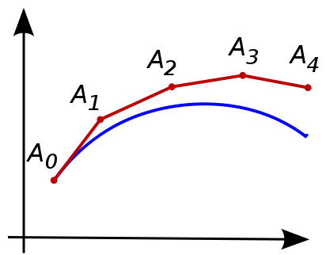

Initial Value Problems
Contents
14.1. Initial Value Problems¶
An initial value problem (IVP) can be written as:
for some right-hand side function \(f(t,y)\) and initial condition \(y_0\) for \(t=t_0\). In these problems, the independent variable \(t\) often represents time.
Sometimes basic calculus can be used to solve these equations. For example, some linear and separable equations have closed-form solutions. But in general we have to resort to numerical methods to find approximations to the solution \(y(t)\).
using PyPlot, PyCall
14.1.1. Euler’s method¶
The most basic approach for numerically solving an IVP is Euler’s method, illustrated below.
 (from Wikipedia, https://en.wikipedia.org/wiki/Euler_method).
We first choose a step size, or time step, \(h\), and define the discrete times \(t_n = t_0 + nh\), \(n = 0,1,\ldots\). Euler’s method advances the solution \(y_n\) at time \(t_n\) to time \(t_{n+1}\) by a linear approximation using the derivative at time \(t_n\):
With some assumptions on the IVP and the step size, these values can be shown to be good approximation to the true solution, that is, \(y_n \approx y(t_n\)).
While described for scalar-valued functions \(y(t)\), the method works equally well for systems of equations, that is, when \(y(t)\) and \(f(t,y(t))\) are vector-valued.
14.1.2. Euler’s method, implementation¶
We implement a general version of Euler’s method which takes the right-hand side function \(f(t,y(t))\)
as an argument. In addition, it takes the initial condition \(y_0\), the step size \(h\), the number of steps \(N\), and the starting time \(t_0\) which has a default value of \(0\). Note that the implementations supports solutions \(y\) that are vector-valued, and the output y is a 2D array of the approximate solutions at each time step.
function euler(f, y0, h, N, t0=0.0)
t = t0 .+ h*(0:N)
y = zeros(N+1, length(y0))
y[1,:] .= y0
for n = 1:N
y[n+1,:] = y[n,:] + h * f(t[n], y[n,:])
end
return t,y
end
euler (generic function with 2 methods)
We demonstrate the method on a model problem with \(f(t,y) = -y + \sin t\) and \(y(0) = 1\). We solve using Euler’s method with time step \(h=0.2\) and \(N=20\) steps.
f(t,y) = -y .+ sin(t)
t,y = euler(f, 1, 0.2, 20)
plot(t, y, "-o");
We can compare the results to the exact solution:
In the code below, we solve three times using various time steps \(h\). In the plot, we see that the results are generally better for smaller \(h\) (as expected), and the accuracy seems to roughly scale linearly with \(h\). This can be shown to be true in general: the method is convergent (the approximations approach the exact solution as \(h \rightarrow 0\)), and the method is first-order accurate (the error scales with the first power of \(h\)).
yexact(t) = exp(-t) + (sin(t) - cos(t) + exp(-t)) / 2
tt = 0:0.01:2
plot(tt, yexact.(tt))
for h = [0.5, 0.2, 0.1]
t,y = euler(f, 1, h, round(Int, 2/h))
plot(t, y, "-o")
end
legend(("Exact", "h=0.5", "h=0.2", "h=0.1"));
14.1.3. The Runge-Kutta method¶
While Euler’s method does give accurate results for small enough time steps \(h\), its first-order convergence is often considered too slow and much better methods have been developed. One of the most popular methods is the following 4th order accurate Runge-Kutta method (RK4):
We implement it in a very similar way to before. Note that each step now requires computing the four so-called stages or stage derivatives \(k_1,k_2,k_3,k_4\).
function rk4(f, y0, h, N, t0=0)
t = t0 .+ h*(0:N)
y = zeros(N+1, length(y0))
y[1,:] .= y0
for n = 1:N
k1 = h * f(t[n], y[n,:])
k2 = h * f(t[n] + h/2, y[n,:] + k1/2)
k3 = h * f(t[n] + h/2, y[n,:] + k2/2)
k4 = h * f(t[n] + h, y[n,:] + k3)
y[n+1,:] = y[n,:] + (k1 + 2k2 + 2k3 + k4) / 6
end
return t,y
end
rk4 (generic function with 2 methods)
Run the same test problem as before using RK4:
yexact(t) = exp(-t) + (sin(t) - cos(t) + exp(-t)) / 2
tt = 0:0.01:2
plot(tt, yexact.(tt))
for h = [0.5, 0.2, 0.1]
t,y = rk4(f, 1, h, round(Int, 2/h))
plot(t, y, "-o")
end
legend(("Exact", "h=0.5", "h=0.2", "h=0.1"));
We can see that the results are fundamentally more accurate. In fact, even with largest time step \(h=0.5\), the point values are essentially right on top of the exact solution. We can compute the error for the smallest time step \(h=0.1\), and note that it has 6 accurate digits:
errors = @. y - yexact(t)
max_error = maximum(abs.(errors))
5.015261516083669e-7